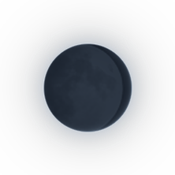

🌑 NEW MOON · The Unknown & Midnight Grind · AFTER DARK · MIDNIGHT DRILL
CORE — COLD ASPHALT
📜 Official Synchronized Lyrics (32 Lines)
▶ 00:04AH, STREETS ARE COLD... LOOK AT ME
▶ 00:06COLD ASPHALT, LOOSE CHANGE IN MY COAT
▶ 00:10MIDNIGHT SPEED, GOT THE PEDAL ON THE FLOOR!
▶ 00:14WORDS CUT DEEP, LEAVE A SCAR ON THE BLOCK
▶ 00:17OFF THE GRID NOW, NEVER STOPPING FOR THE CLOCK!
▶ 00:20COLD STREETS... · HIT THE GAS!
▶ 00:27COLD STREETS... · HIT THE GAS!
▶ 00:342 A.M. GRINDING AT THE WOODEN DESK
▶ 00:36STRONG BLACK TEA IN A RUSTY TIN CUP PRESSED
▶ 00:39RIPPED COAT POCKET, WET SOLES ON THE STONE
▶ 00:43LEAVING WET TRACKS WALKING BACK HOME
▶ 00:47EYES ON THE TOP, I AIN'T BACKING DOWN
▶ 00:49WORKING EVERY NIGHT JUST TO RUN THIS TOWN!
▶ 00:53LIGHTS GO OUT, CITY SILENT AND COLD
▶ 00:57I OWN THIS MAHALLE, STORY'S GOTTA BE TOLD!
▶ 01:01COLD ASPHALT, LOOSE CHANGE IN MY COAT
▶ 01:05MIDNIGHT SPEED, GOT THE PEDAL ON THE FLOOR!
▶ 01:08WORDS CUT DEEP, LEAVE A SCAR ON THE BLOCK
▶ 01:12OFF THE GRID NOW, NEVER STOPPING FOR THE CLOCK!
▶ 01:15WET PAVEMENT RIGHT OUTSIDE MY GATE
▶ 01:18SCRAWLED ON PAPER, WRITING MY OWN FATE
▶ 01:21HEAVY 808 HITTING HARD IN MY HEAD
▶ 01:24CARVED MY OWN NAME WHERE THE STREET RUNS RED!
▶ 01:29C O L D A S P H A L T
▶ 01:36M I D N I G H T S P E E D
▶ 01:43COLD ASPHALT, LOOSE CHANGE IN MY COAT
▶ 01:48MIDNIGHT SPEED, GOT THE PEDAL ON THE FLOOR!
▶ 01:57WORDS CUT DEEP, LEAVE A SCAR ON THE BLOCK
▶ 02:00OFF THE GRID NOW, NEVER STOPPING FOR THE CLOCK!
▶ 02:03COLD STREETS... · HIT THE GAS!
▶ 02:10COLD STREETS... · HIT THE GAS!
▶ 02:16C O L D A S P H A L T